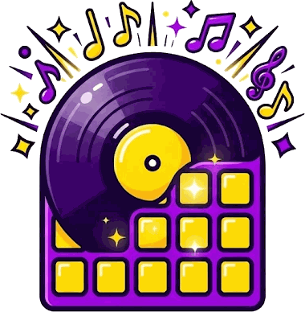

Musi
kino
El bingo musical. ¿Cómo jugáis hoy?
📱 Online
La tele o la tablet pone la música y cada uno juega en su móvil. Los premios se detectan solos. No hay que imprimir nada.
📝 De mesa
Cartones de papel y bolígrafo. La tablet pone la música y valida los premios que se cantan (voz o timbre).
🖨️ Imprimir cartones
Para la versión de mesa: 4 cartones numerados por folio.
Los jugadores de la versión online entran escaneando el QR que sale en la pantalla del host.